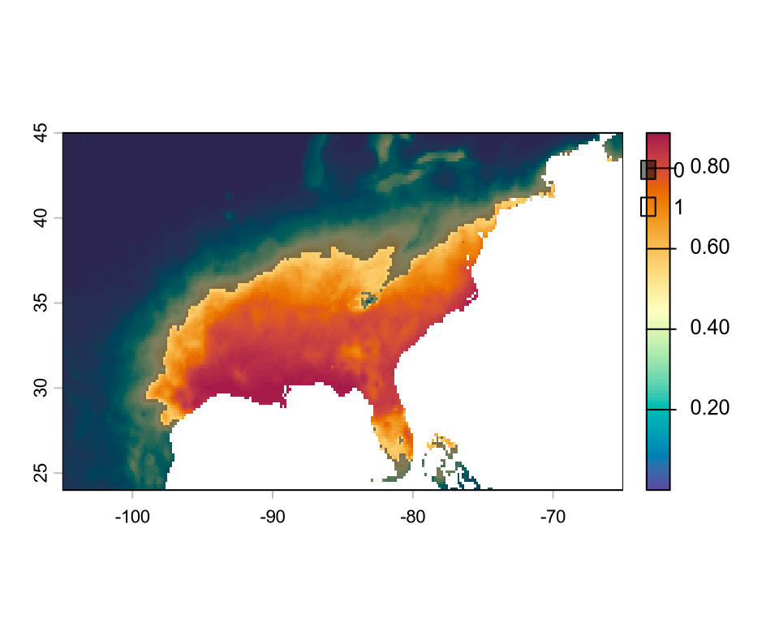
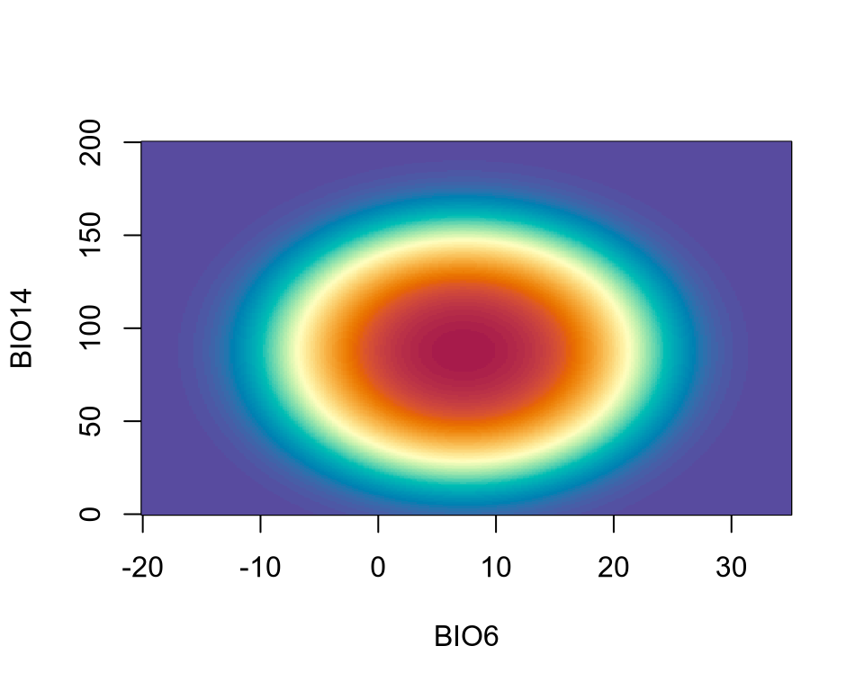

Code
library(terra)
# load ENM
enm <- readRDS("../data/podarcis_muralis-enm.rds")The ENM for the species Podarcis muralis from the previous lecture is trained on data obtained from Europe.
library(terra)
# load ENM
enm <- readRDS("../data/podarcis_muralis-enm.rds")One might be interested in projecting the potential distribution of this species outside the range of the training locations. This procedure is called geographical extrapolation. For example, we might want to extrapolated the ENM to North America, where an invasive population was established after a boy brought this species back from a trip to Italy. In addition, one might be interested in projecting the distribution for future climate conditions. This procedure is called temporal extrapolation. For example, we might want to assess where the species will go extinct and where it will expand in the future. Although both types of extrapolations are practically performed in the same way, they have slightly different assumptions.
Geographic extrapolations are achieved simply by projecting to a new raster layer with the same type of data used for training the ENM. For example, we can project the distribution of P. muralis in North America.
# load bioclims
r <- rast(file.path("../data", c("wc2.1_10m_bio_6.tif", "wc2.1_10m_bio_14.tif")))
e <- ext(-105, -65, 24, 45) # North America
r <- crop(r, e)For the GLM ENM, use the terra::predict() functions.
sdm <- predict(r, enm, type = "response")
sdm_bin <- ifel(sdm >= 0.55, 1, 0) # from previous lecture
plot(sdm, col = hcl.colors(100, "Spectral", rev = TRUE))
plot(sdm_bin, col = c("#00000080", "#FFFFFF00"), add = TRUE)
This map show both the continous SDM (colors) and the binary SDM (black shade masks the areas outside the projected suitabile range).
If the climate layers are not cropped, the projection will be worldwide.
# re-load bioclims
r <- rast(file.path("../data", c("wc2.1_10m_bio_6.tif", "wc2.1_10m_bio_14.tif")))
# re-project SDM
sdm <- predict(r, enm, type = "response")
sdm_bin <- ifel(sdm >= 0.55, 1, 0) # from previous lecture
plot(sdm, col = hcl.colors(100, "Spectral", rev = TRUE))
plot(sdm_bin, col = c("#00000080", "#FFFFFF00"), add = TRUE)
Geographic extrapolations have one potential issue: The environmental (climatic) conditions in the extrapolated area might be outside the range of the data used for training.
The easiest way to understand potential issues due to this statistical extrapolation is to visualize again the inferred niche of the species.
newd <- expand.grid(
wc2.1_10m_bio_6 = seq(-20, 35, length.out = 3e2),
wc2.1_10m_bio_14 = seq(0, 200, length.out = 3e2)
)
z <- predict(enm, newdata = newd, type = "response")
z <- matrix(
z,
nrow = length(unique(newd$wc2.1_10m_bio_6)),
ncol = length(unique(newd$wc2.1_10m_bio_14))
)
image(
x = sort(unique(newd$wc2.1_10m_bio_6)),
y = sort(unique(newd$wc2.1_10m_bio_14)),
z = z,
col = hcl.colors(100, "Spectral", rev = TRUE),
xlab = "BIO6", ylab = "BIO14"
)
If we overlay on this image a mask highlighting the range of the training data, i.e. the range of the climatic variables at locations where the species was detected, we notice a subtle problem.
# load occurrence data
d <- read.csv("../data/occurrences.csv")
ranges <- apply(d[, c("wc2.1_10m_bio_6", "wc2.1_10m_bio_14")], MARGIN = 2, range)
image(
x = sort(unique(newd$wc2.1_10m_bio_6)),
y = sort(unique(newd$wc2.1_10m_bio_14)),
z = z,
col = hcl.colors(100, "Spectral", rev = TRUE),
xlab = "BIO6", ylab = "BIO14"
)
rect(
xleft = -30,
ybottom = 0,
xright = ranges[1, 1],
ytop = 200,
col = "#00000080",
lwd = 0
)
rect(
xleft = ranges[2, 1],
ybottom = 0,
xright = 50,
ytop = 200,
col = "#00000080",
lwd = 0
)
rect(
xleft = ranges[1, 1],
ybottom = 0,
xright = ranges[2, 1],
ytop = ranges[1, 2],
col = "#00000080",
lwd = 0
)
rect(
xleft = ranges[1, 1],
ybottom = ranges[2, 2],
xright = ranges[2, 1],
ytop = 300,
col = "#00000080",
lwd = 0
)
The black shades show where the occurrence data did not have any climatic data, i.e. regions of the environmental (climatic) space that were not explored and did not contribute in training our ENM. When we extrapolate outside of this training box, e.g. for values of BIO6 > 10 or of BIO14 > 120, the validity of our ENM is questionable and our projections become very uncertain. How much questionable and uncertain depends on the algorithm used for ENM and how far away extrapolations are from the training range.